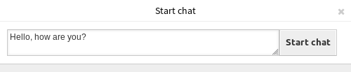
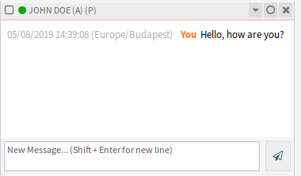
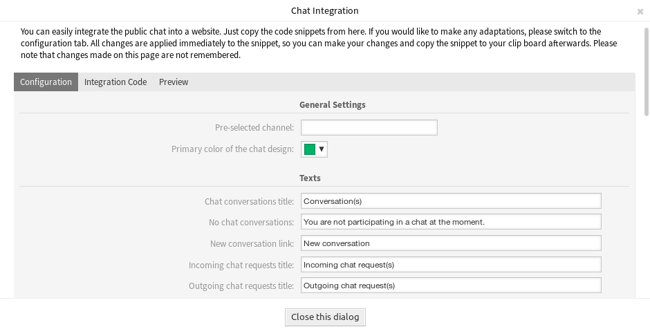

Manage Chats¶
See also
System configuration ChatEngine::Active needs to be activated to use this feature.
The chat management screen is the central point of the chat feature. Here an agent can manage the chats as well as see and accept open requests. This screen provides a list of chat requests from customer users, public users and other agents, as well as an overview over all active chats.
Use this menu item to manage chats. The chat management screen is available in the Chat menu.

Chat Management Screen
Each chat channel can be filtered with the options in the top of the widget to list All Chat Channels or only My Chat Channels set in Personal Preferences.
Start New Chat¶
A chat participant can be an agent, a customer user or a public user.
Agent to Agent¶
To start a chat with another agent:
Use the Logged-In Users widget in the dashboard. Agents who are able to use the chat, will have a chat icon next to their name.

Available Agents
Click on the chat icon next to an agent name.
Write the first message to the Start Chat dialog and send the message.
Start Chat Dialog
After the chat request has been sent to the other agent, watch the chat in the chat management screen. A browser notification is displayed to inform the agent.
My Active Chats Widget
Wait for the answer. The other agent has to accept the chat request with the Open Chat link.

Personal Chat Requests For You Widget
When the other agent accepts the chat request, you can chat now.

Agent to Agent Chat
Agent to Customer User¶
To start a chat with a customer user:
Use the Logged-In Users widget in the dashboard. Customer users who are able to use the chat, will have a chat icon next to their name.

Available Customer Users
See also
Customer users can also be selected in Customer User Information Center or from the Customer Information widget of the Ticket Zoom screen.
Click on the chat icon next to a customer user name.
Write the first message to the Start Chat dialog and send the message.
Start Chat Dialog
After the chat request has been sent to the other agent, watch the chat in the chat management screen. A browser notification is displayed to inform the agent.

My Active Chats Widget
Wait for the answer. The customer user has to accept the chat request which is displayed in the bottom right corner of the external interface.

Chat Request on External Interface
When the customer user accepts the chat request, you can chat now.

Agent to Customer User Chat
When the customer user closes the chat, it is possible to send the chat via email or create a ticket from the conversation.

Save the Conversation on External Interface
Customer User to Agent¶
Customer users are not able to start a chat directly with a certain agent, but only to create generic chat requests.
To receive a chat request from a customer user:
A customer user clicked on the New conversation button within the chat window in the bottom right corner of the external interface.

Start Chat Window
A browser notification is displayed to inform the agent. Go to the chat management screen, and open the general chat request with the Open chat link.

General Chat Requests From Customers Widget
Accept the chat request.

Chat Preview Dialog
When an agent accepts the chat request, they can chat now.

Customer User to Agent Chat
Public User to Agent¶
Visitors of the external interface are also not able to start a chat directly with a certain agent, but only to create generic chat requests. As they are not logged in, they need to add a name to start the chat.

Start Chat Window
The steps are the same as described in Customer User to Agent section, but the chat request is displayed in the General Chat Requests From Public Users widget.

General Chat Requests From Public Users Widget
Chat Widget¶
The chat widget is the main component when chatting with other people. It provides a history of all messages in the chat as well as list of possible actions depending on your permission level.
The messages can be sent using the text field of a chat in My Active Chats widget by either clicking the send icon next to the text field or hitting the Enter key. Shift + Enter can be used to insert a new line into the message.
Every chat participant has a colored circle icon before his/her name in the chat widget header, which represents the participant availability.
- Green: participant is active (available and online).
- Yellow: participant is away (available, but there was no request sent to the server from this user for some time set in
ChatEngine::AgentOnlineThreshold). - Pink: participant is inactive (chat request is not accepted yet or participant left the chat).
- Red: participant is unavailable (set via availability button).
- Black: participant has logged out or session has expired.
The chat widget has some icons in the top right corner.

Chat Menu
The first triangle icon expands and collapses the chat menu. The menu has several menu items.
- Phone ticket
- Allows you to create a phone ticket to which the current chat will be appended to as an article. After the ticket has successfully created, the chat will get closed automatically.
- Append
- Allows you to append this chat as an article to a selected ticket. After the article has been created, the chat will get closed automatically.
- Invite
- Allows you to invite another agent to this chat. You can select from a list of available agents who you want to invite. Once the agent has invited, a new agent to agent chat request will be sent to this agent. After the request has accepted, a new internal chat will be established between you and the invited agent. In this internal chat, the invited agent has two more actions available in the advanced actions toolbar: Observer and Participant.
- Channel change
- Using this link, you can change the channel for this chat. For the selection of the target channel the same rules apply as for initially selecting a chat channel.
- Download
- Lets you download the complete history of this chat as PDF.
- New window
- Opens this chat in a separate popup window. You can use this window in the same way as the chat widget and both the widget and the popup can be used at the same time.
- Observer
When you have been invited to a chat by another agent, you can decide if you want to join the chat as observer or participant depending on your permission level. Once you click the action from your toolbar, a new chat widget will be added to the list of your active chats which is the chat you have been invited to.
If you join the chat as observer, you will only be able to read what others are contributing to the chat and you will be invisible to customer users or public users. Agents will still receive a message that you joined the chat as observer.
As an observer, you have the possibility to become a participant anytime by using the advanced action toolbar in your chat widget depending on your permission level.
- Participant
- If you want to contribute something to the chat you have been invited to, you can join it as a participant. Customer users, public users and agents will receive a message that you have entered the chat. As a participant, you can become an observer anytime by using the advanced action toolbar in your chat widget.
The second circle icon allows the agent to set up a personal monitoring for this chat, which is a three-way switch:
- Empty circle: no monitoring.
- Empty circle with tick icon: only monitor customer user activity.
- Filled circle with tick icon: monitor all actions.
When monitoring a chat, browser notifications will show up each time there is a new action in this chat.
Finally the third close icon makes it possible to close the chat by clicking on the X.
Chat Integration¶
The public chat can be easily integrated into a website with the chat integration configuration and snippet generator.
To configure the chat and generate code snippet:
Click on the Configure Chat Integration button in the left sidebar.
Customize the texts in the Configuration tab.
Chat Integration – Configuration
Note
All changes made in the Configuration tab will not be saved. Every time you open this dialog, all fields will be reset to default values.
Copy the code snippet from the Integration Code tab and paste it into your website right before the
</body>element.
Chat Integration – Integration Code
You can check the result in the Preview tab.

Chat Integration – Preview
Note
The preview uses the real chat module. Other agents have to be available for chatting to preview all features.
If mixed content warning is displayed in the browser console, an administrator has to check that the system configuration setting HttpType is properly set. The website must run on the same protocol for chat widget to work.
For example, if the website is running OTRS on SSL, the system configuration option must be set to https.